안녕하세요~ ^^ '판넬매니아!' 입니다.~
조립식판넬 시공의 모든 것을 한 눈에 알 수 있는 '판넬시공이야기' 다섯번째 이야기 !
오늘은 광주광역시 상가(근린생활시설) 신축공사 이야기입니다.
<1>
판넬매니아가 전해드리는 상가 시공 두번째군요.
상가신축을 볼때마다 느끼는 것이지만
외장판넬을 어떤것으로 선택하느냐에 따라 상가의 느낌이 확실히 달라지는 것 같습니다.
상가는 외관에 따라서 입점한 업체의 이미지까지 영향을 주는것 아시죠?
자~ 그럼 양산동 조립식 판넬 상가신축이야기 시작해볼께요~ ^^
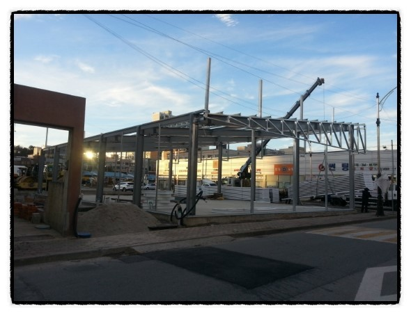
건축주가 꼼꼼히 고르신 판넬 벽체가 크레인으로 현장에 들어오고 있습니다.
<2>
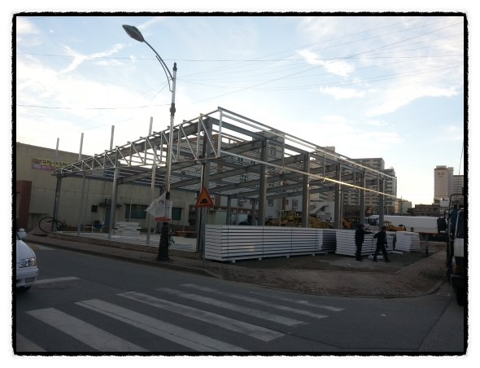
현장에 들어온 판넬을 꼼꼼히 검수하고 면별 위치를 잡았습니다.
<3>
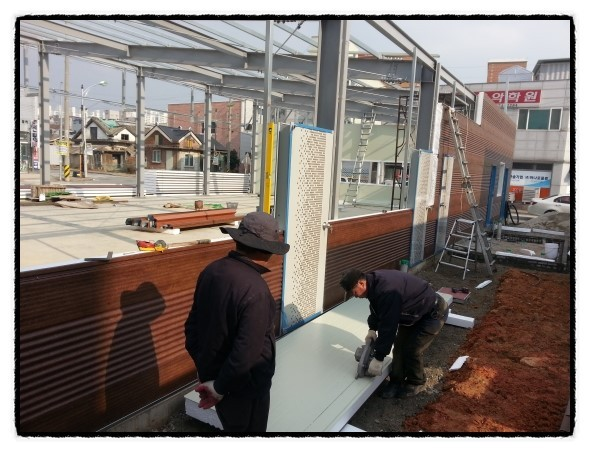
판넬 배면 작업중이네요.
창호의 위치와 방화문 자리를 가공하고 있습니다.
<4>
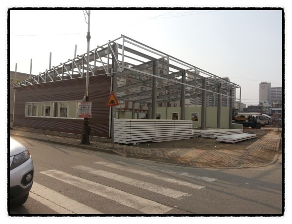
건물 좌측면 벽체작업이 완료되었습니다.
본 건물의 하이샷시는 건축주가 지정한것으로 별도 제작하였습니다.
<5>
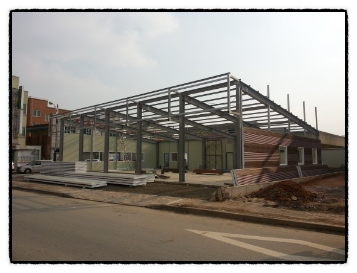
건물 우측면을 작업중입니다.
좌측면과 달리 입간판 캐노피를 제외하였습니다.
<6>
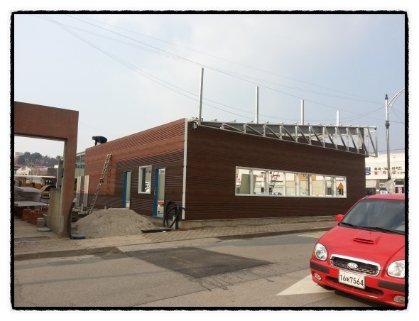
배면작업과 우측면 하자 보강중입니다.
(다세대 상가로 인한 구조변경들)
<7>
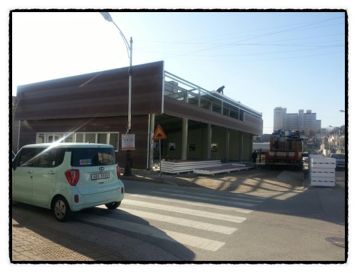
지붕을 시공하면서
상가 전면 캐노피(입간판)를 동시시공하였습니다.
<9>
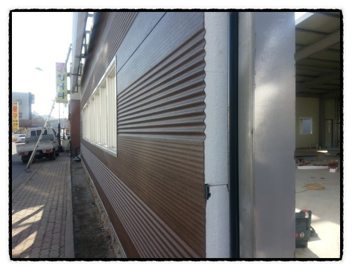
외벽체 시공이 완료되었습니다 ^^
벽체타입은 C-45를 사용하였습니다.
대광판넬의 C-45는 타사의 판넬에 비래 골이 더 많은게 장점인거 아시죠?
<9>
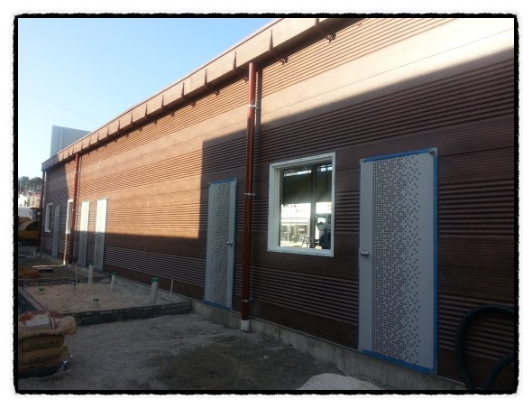
물받이와 선흠통 작업까지 완료 !
시공사 대표께서 백색 선흠통을 판넬컬러와 맞춰서 다크브라운 계열로 별도로 도장을 하셨습니다.
세심한 부분까지 컬러를 맞춘 시공에 시공사의 세심한 배려가 돋보입니다. ^^
<10>
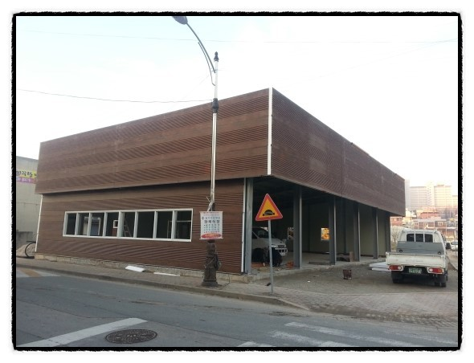
좌측면 캐노피와 전면 캐노피 판넬 시공이 완료되었습니다.
마감재 시공전의 모습이지만~ 멋지죠?
<11>
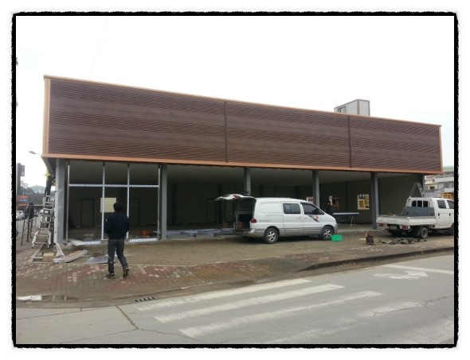
전면 마감 작업중입니다.
전면 후레싱 완료하고 스테이인레스 윈도우를 설치중입니다.
탈색우려를 감안하여 동색 엠보 계열 후레싱을 선택하였습니다.
<12>
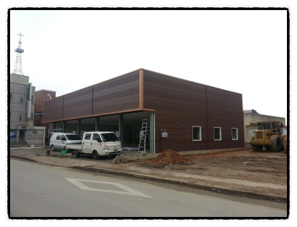
전면 후레싱까지 마감되었습니다. ^^
<13>
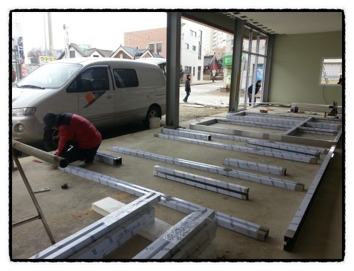
전면 스테인레스 윈도우 작업전 형틀을 제작하고 있습니다.
상가(근린생활시설) 건물은 열관류로 인해 단열바를 설치합니다.
단열바도 대광판넬에서 자체 생산한 제품입니다. !!
<14>
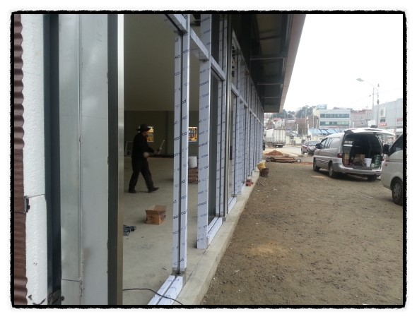
스테인레스 단열바를 시공한후
시공사인 에스E.N.G 대표님이 꼼꼼히 검수하고 계시네요~
<15>
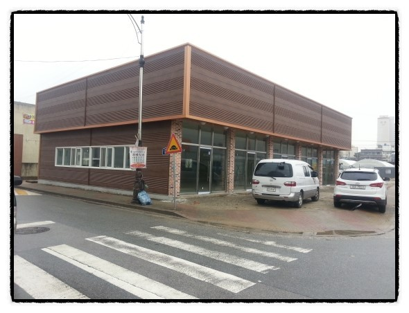
전면 윈도우 후레싱 마감처리는 치장벽돌로 하였습니다.
유리시공까지 마무리하니 건물이 더욱 멋진데요 ~~ !! ^^
<16>
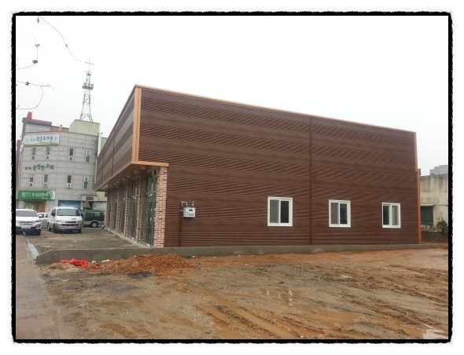
드디어 판넬 Quality NO.1 대광판넬에서 생산한 조립식 판넬과 부자재를 가지고
멋진 상가신축공사가 마무리 되었습니다.
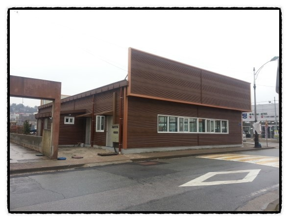
어때요? 이쯤되면 다른 건물주들이 부러워할만하죠? ㅎ